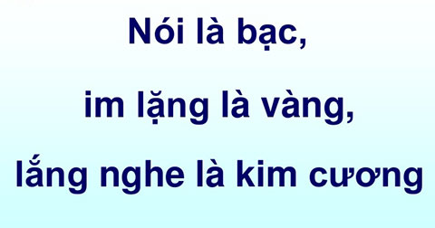

NÓI ĐÚNG VÀ NGHE CHÂN THÀNH
Tào: Ê hôm qua tao có xem tin tức về một vụ trộm cắp….
Tèo: Sao vụ của nhà ông XXX à
Tào: Không phải….
Tèo: Thế của nhà bà YYY à
Tào: Không phải, mày nghe tao nói cái coi
Tèo: Nếu không phải chắc của nhà thằng ZZZ
Tào: Nhà cô XYZ, đài nó nói là…..
Tèo: À tao biết rồi, nhà cô XYZ bán kim cương chứ gì
Tào: Đài nó nói là nhà cô XYZ bán vàng bị cướp 50 triệu, có bà cô bán bánh….
Tèo: À ra là bà cô bán bánh đó ăn cướp à, hay nhỉ.
Tào: … Bà cô bán bánh đó thấy một người đàn ông khả nghi chạy ra từ nhà cô XYZ đó…
Tèo: Ra vậy là thằng kia mới là ăn cướp à
Tào: Uh. Đài nói thêm là…….
Tèo: Chắc thằng đó gan lắm mới đi ăn cướp hak.
Tào: Mày muốn biết không?
Tèo: Uh, đương nhiên rồi……
Tào: Tự về mở kênh ZYZ mà coi đi, tao hết muốn kể rồi. Tao đi đây
Tèo: Ê, kể chưa xong mà, chờ tao cái coi….
;
Một câu chuyện vui thôi nhỉ? Tuy vậy, câu chuyện đã phản ánh phần nào thói quen sống của đại bộ phận con người đấy. Bạn có thầy mình trong câu chuyện trên không? Thay vì thông tin trên câu chuyện có thể nói trong một lần (Ê hôm qua tao có xem tin tức về một vụ trộm cắp ở nhà cô XYZ bán vàng bị cướp 50 triệu và có một bà cụ bán bánh thấy một người đàn ông chạy ra từ nhà cô XYZ…..) thì phải mất hơn 5 lần. Nguyên nhân chắc các bạn cũng có thể nhìn thấy rồi á, không phải vì người kể diễn đạt không tốt, mà người còn lại không chịu lắng nghe, hay nói gần hơn là chen vào nói leo nên khiến cho câu chuyện một lần kể thành ít nhất 5 lần kể mà vẫn chưa xong.
Thế đấy, các bạn à! Một người bình thường sinh ra sẽ có 2 cái tai và chỉ 1 cái miệng, cũng như một đứa bé khi sinh ra trước khi có thể nói rõ ràng một từ thì những đứa bé ấy biết lắng nghe âm thanh của cha mẹ khi gọi để phản ứng. Mà lẽ nào điều này lại ngược lại khi con người lớn lên khi mà kỹ năng nói à không khả năng nói lại tăng gấp nhiều lần so với sự lắng nghe. Như một ví dụ trên là điển hình, có một bộ phận người mà tôi gặp hằng ngày, họ rất thích nói, ở bên cạnh họ bạn có cảm tưởng như mình đang ngồi bên một kênh của chương trình tivi nhiều hạng mục vậy. Ở đây tôi không có ý chê bai họ bởi vì lời nói nhiều, khả năng tìm kiếm, nắm bắt thông tin của họ cũng ở mức khá đó chứ (Mức tốt rất khó đạt được ở những người này) và họ khá cởi mở đấy. Tuy nhiên, họ cần phải điều chỉnh lại khả năng này một chút.
Họ cần điều chỉnh điều này là bởi vì.
- Nếu điều họ nói là những kiến thức chuyên môn, chuyên ngành mà người giao tiếp với họ cần có, cần biết thì cứ thông thả đi nhưng thông thả chứ không phải buông thả, hãy biết kết hợp với đôi mắt để nhìn thấy phản ứng, biểu cảm của người giao tiếp bởi nước lả đổ lá môn chỉ tốn nước chứ lá môn chưa hẳn có hề hấn gì. Còn nội dung họ nói là những tạp chí lá cải, câu chuyện thế giới thì không được thông thả, phải hiểu rằng người giao tiếp với mình là ai, họ có quan tâm chuyện mình nói không! Họ có hứng thú, có lắng nghe mình không? Bởi chẳng ai thích nghe những thứ mà mình chẳng quan tâm, chẳng ảnh hưởng gì đến cái dạ dày của họ cả.
- Bạn có phải là người nói nhiều không? Mà không quan trọng lắm, chỉ là nếu bạn là người tôi đề cập đến thì chắc bạn cũng thấy đấy, một số bạn của bạn khi chơi chung lâu ngày, đến một thời gian nào đó có thể họ sẽ hơi có khoảng cách với bạn, thường là những người này là những đứa ít nói, vẻ không quan tâm đến nhiều chuyện. Vì sao vậy, đơn giản họ cần không gian im lặng, nếu không có chuyện liên quan đến họ hoặc những thứ họ quan tâm thì họ cũng chẳng cần quan tâm những chuyện khác làm gì, mà bạn lại nói nhiều thứ mà có thể họ chẳng quan tâm tí nào, dạng như bạn nói có thấy một con bướm đậu trên một chiếc xe tải mà thứ họ quan tâm trong cuộc sống họ lại là chiếc điện thoại mới ra.
Như trên tôi đã nói, tôi không chê bai sự nói nhiều của một số người, chỉ là cần phải dùng đúng lúc, đúng nơi, đúng người, đúng thời điểm, đúng câu chuyện.
Mà không chỉ sở hữu khả năng nói đặc biệt, đồng thời đại đa số mọi người lại giảm đi khả năng lắng nghe của mình, (Kể cả những người không nói nhiều). Nói về câu chuyện phía trên thì có lẽ mọi thứ sẽ dễ dàng và nhanh chóng hơn khi một người nói và người kia lắng nghe một cách thật sự. Bạn cũng gặp phải những tình huống tương tự thế này mà nhỉ, khi bạn nói về một điều gì đó mà người khác lại chẳng quan tâm nghe, hoặc luôn chen vào lời nói của bạn một cách thiếu tế nhị thì bạn cảm giác ra sao?
Con người có 2 cái tai, 1 miệng thôi, cho nên lắng nghe phải là thứ cần được tăng trưởng theo thời gian chứ không phải giảm dần theo độ tuổi. Trong những quyển sách phát triển bản thân tôi đã được đọc qua, một trong những thứ quan trọng làm nên một con người đó là sự khiêm tốn, mà biểu hiện thể hiện rõ nhất sự khiêm tốn đó chính là biết lắng nghe. Biết lắng nghe không chỉ đơn thuần là một cách để giao tiếp với người khác mà nó còn là kỹ năng mềm trong việc tạo lập thành công của bản thân khi người đó muốn thành công trong cuộc sống, và nó cần một lớp học bài bản hay một sự luyện tập kiên trì.
Bạn có cảm giác gì khi lời nói của mình được người khác lắng nghe? Chủ đề của mình nói, từng câu, từng chữ, từng ngữ điệu cơ thể của bản thân khi giao tiếp với người khác lại được người đó tiếp nhận tinh tế và tỉ mỉ,…. Không biết cảm giác của bạn ra sao nhưng tôi vui vì điều đó. Tôi chuẩn bị một bài diễn thuyết vài tiếng đồng hồ, thậm chí là vài ngày để nói trong chưa đầy 20 phút và trong khi nói, tôi cảm nhận được rằng mọi người đang chăm chú lắng nghe mình nói,…. Đó là một món quà lớn đáp lại sự chuẩn bị của tôi. Và bạn cũng có thể tặng món quà đó cho bất cứ ai khi giao tiếp với họ. Không nhất thiết phải là một buổi diễn thuyết hay một diễn văn lớn trong khán phòng mà chỉ cần trong việc giao tiếp hằng ngày cũng đủ và họ sẽ trả lại cho bạn sự thành công.
Khi bạn biết lắng nghe người khác nói, đối tượng giao tiếp với bạn sẽ tỏ ra cảm ơn sâu sắc tới sự lắng nghe của bạn, đồng thời họ đánh giá cao con người của bạn, uy tín, sự chân thành của bạn được họ coi trọng, và thế là bạn đã thành công được một phần rồi đấy.
Cơ mà, cuộc sống mà, có quá nhiều lý do cho bạn chối bỏ khả năng lắng nghe này đi, những lý do đó thường là: “Chán lắm, chẳng muốn nghe”, “Người đó nói dở tệ”, “Sao phải lắng nghe, góp thêm ý kiến vào mới sôi nổi được chứ”,….. hoặc nhiều người không có lý do cho chuyện đó thế là họ nói “Quen rồi, khó bỏ lắm”. Cơ bản thì đó cũng chỉ là lý do, và lý do theo quan niệm của tôi đó chính là sự biện minh cho việc bản thân không có khả năng trong chuyện đó và nó chẳng gì khác hơn một lời biện minh cả. Nếu chán thì bạn cần làm gì đó cho hết chán thôi, chán là do bạn muốn như thế nên suy nghĩ cũng sẽ như thế mà thể hiện ra bên ngoài con người bạn thôi, người đó nói dở thì bạn cần góp ý cho người đó nói tốt hơn, âu phải ai cũng đều là hạng A trong mọi lĩnh vực, còn về việc góp ý kiến cá nhân vào cuộc giao tiếp với một hình thức không tế nhị, chẳng tôn trọng câu chuyện thì nó không phải là sôi nổi mà là một sự bất lịch sự.
Cuộc đời bạn do bạn quyết định, là một người có tính khiêm tốn, là một người lịch sự, được mọi người tin tưởng, đề cao hay một kẻ bất lịch sự, thiếu khiêm tốn,… là do bạn quyết định.
Mà để học được cách lắng nghe thì rất khó, nó không phải như phép cộng, trừ, nhân, chia chỉ cần biết là làm được, nó đòi hỏi sự kiên trì luyện tập theo thời gian đấy. Một trong những cách luyện tập khá hiệu quả mà tôi được biết đó chính là hãy tìm một đứa trẻ và nói chuyện với nó, lắng nghe nó nói, bạn sẽ học ra được rất nhiều điều đấy. À quên nữa, lắng nghe là một cách học nhưng cũng như đọc sách phải chọn sách mà đọc, nghe cũng phải chọn thứ cần nghe.
;Hôm nay viết dài thật nhưng chẳng qua chỉ là thắc mắc của cá nhân “Thằng khờ” này về chuyện tại sao con người có 1 miệng 2 tai nhưng lại giỏi nói và kém nghe thế thôi.
Tóm lại là theo “Thằng khờ” này thì “Hãy nói nhưng phải nói đúng thời gian, đúng thời điểm, đúng người, đúng chuyện và lắng nghe nhiều hơn” bạn sẽ thành công thôi
--- Chúc các bạn nói giỏi và nghe tuyệt vời ---